#01、 数组的概述
/* | |
* 一、数组的概述 | |
* 1. 数组的理解：数组 (Array)，是多个相同类型数据按一定顺序排列的集合， | |
* 并使用一个名字命名，并通过编号的方式对这些数据进行统一管理。 | |
* | |
* 2. 数组的相关概念： | |
* > 数组名 | |
* > 元素 | |
* > 角标、下标、索引 | |
* > 数组的长度：元素的个数 | |
* | |
* 3. 数组的特点： | |
* 1) 数组属于引用类型的变量。数组的元素，既可以是基本数据类型，也可以是引用数据类型。 | |
* 2) 创建数组对象会在内存中开辟一整块连续的空间； | |
* 3) 数组的长度一旦确定，就不能修改； | |
* 4) 数组是有序排列的。 | |
* | |
* 4. 数组的分类： | |
* ① 按照维数：一维数组、二维数组、三维数组…… | |
* ② 按照数组元素类型：基本数据类型元素的数组、引用类型元素的数组 | |
* | |
*/ |
# 02、 一维数组的使用
/* | |
* ① 一维数组的声明和初始化 | |
* ② 如何调用数组的指定位置的元素 | |
* ③ 如何获取数组的长度 | |
* ④ 如何遍历数组 | |
* ⑤ 数组元素的默认初始化值：见 ArrayTest1.java | |
* ⑥ 数组的内存解析：见 ArrayTest1.java | |
*/ |
1、代码案例 1——ArrayTest.java
public class ArrayTest { | |
public static void main(String[] args) { | |
//1. 一维数组的声明和初始化 | |
int num; // 声明 | |
num = 10; // 初始化 | |
int id = 1001; // 声明 + 初始化 | |
int[] ids; // 声明 | |
//1.1 静态初始化：数组的初始化和数组元素的赋值操作同时进行 | |
ids = new int[]{ 1001,1002,1003,1004}; | |
//1.2 动态初始化：数组的初始化和数组元素的赋值操作分开进行 | |
String[] names = new String[5]; | |
// 错误的写法： | |
// int [] arr1 = new int []; // 未赋值、未指明长度 | |
// int[5] arr2 = new int[5]; | |
// int[] arr3 = new int[3]{1,2,3}; | |
// 也是正确的写法： | |
int[] arr7 = { 1,2,3,5,4};// 类型推断 | |
/* 总结：数组一旦初始化完成，其长度就确定了。 | |
*/ | |
//2. 如何调用数组的指定位置的元素：通过角标的方式调用。 | |
// 数组的角标 (或索引) 从 0 开始的，到数组的长度 - 1 结束 | |
names[0] = "张郃"; | |
names[1] = "王陵"; | |
names[2] = "张学良"; | |
names[3] = "王传志"; //charAt(0) | |
names[4] = "李峰"; | |
// names [5] = "周礼"; // 如果数组超过角标会通过编译，运行失败。 | |
//3. 如何获取数组的长度 | |
// 属性：length | |
System.out.println(names.length); //5 | |
System.out.println(ids.length); //4 | |
//4. 如何遍历数组 | |
// System.out.println(names[0]); | |
// System.out.println(names[1]); | |
// System.out.println(names[2]); | |
// System.out.println(names[3]); | |
// System.out.println(names[4]); | |
for(int i = 0;i < names.length;i++){ | |
System.out.println(names[i]); | |
} | |
} | |
} |
2、代码案例 2——ArrayTest1.java
/* | |
* ⑤ 数组元素的默认初始化值 | |
* > 数组元素是整形：0 | |
* > 数组元素是浮点型：0.0 | |
* > 数组元素是 char 型：0 或 '\u0000'，而非 '0' | |
* > 数组元素是 boolean 型:false | |
* | |
* > 数组元素是引用数据类型：null | |
*/ | |
public class ArrayTest1 { | |
public static void main(String[] args) { | |
//5. 数组元素的默认初始化值 | |
int[] arr = new int[4]; | |
for(int i = 0;i < arr.length;i++){ | |
System.out.println(arr[i]); | |
} | |
System.out.println("*****************"); | |
short[] arr1 = new short[4]; | |
for(int i = 0;i < arr1.length;i++){ | |
System.out.println(arr1[i]); | |
} | |
System.out.println("*****************"); | |
float[] arr2 = new float[5]; | |
for(int i = 0;i < arr2.length;i++){ | |
System.out.println(arr2[i]); | |
} | |
System.out.println("*****************"); | |
char[] arr3 = new char[5]; | |
for(int i = 0;i < arr3.length;i++){ | |
System.out.println("----" + arr3[i] + "****"); | |
} | |
if(arr3[0] == 0){ | |
System.out.println("你好！"); | |
} | |
System.out.println("*****************"); | |
boolean[] arr4 = new boolean[5]; | |
System.out.println(arr4[0]); | |
System.out.println("*****************"); | |
String[] arr5 = new String[5]; | |
System.out.println(arr5[0]); | |
// 验证 | |
if(arr5[0] == null){ | |
System.out.println("北京天气好差！"); | |
} | |
} | |
} |
# 2.1、内存的简化结构
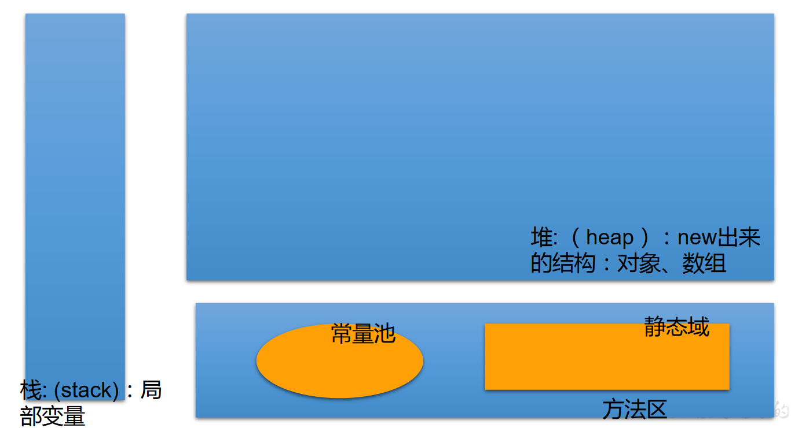
# 2.2、一维数组的内存解析
int[] arr = new int[]{ 1,2,3}; | |
String[] arr1 = new String[4]; | |
arr1[1] = “刘德华”; | |
arr1[2] = “张学友”; | |
arr1 = new String[3]; | |
System.out.println(arr1[1]);//null |
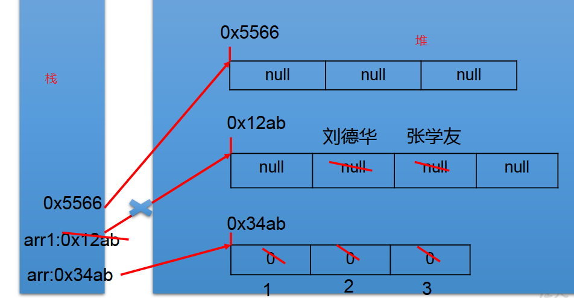
按照图中步骤，最后数组内存解析完成，数组内部值为 null。
# 2.3、练习 1
/* | |
* 升景坊单间短期出租 4 个月，550 元 / 月（水电煤公摊，网费 35 元 / 月），空调、卫生间、厨房齐全。 | |
* 屋内均是 IT 行业人士，喜欢安静。所以要求来租者最好是同行或者刚毕业的年轻人，爱干净、安静。 | |
* eclipse 代码一键格式规范化：Ctrl+Shift+F | |
*/ | |
public class ArrayDemo { | |
public static void main(String[] args) { | |
int[] arr = new int[] { 8, 2, 1, 0, 3 }; | |
int[] index = new int[] { 2, 0, 3, 2, 4, 0, 1, 3, 2, 3, 3 }; | |
String tel = ""; | |
for (int i = 0; i < index.length; i++) { | |
tel += arr[index[i]]; | |
} | |
System.out.println("联系方式：" + tel); | |
} | |
} |
1、练习 2
/* | |
* 2. 从键盘读入学生成绩，找出最高分，并输出学生成绩等级。 | |
* 成绩 >= 最高分 - 10 等级为’A’ | |
* 成绩 >= 最高分 - 20 等级为’B’ | |
* 成绩 >= 最高分 - 30 等级为’C’ | |
* 其余等级为’D’ | |
* 提示：先读入学生人数，根据人数创建 int 数组，存放学生成绩。 | |
*/ | |
import java.util.Scanner; | |
public class ArrayDemo2 { | |
public static void main(String[] args) { | |
//1. 使用 Scanner，读取学生的个数 | |
Scanner scan = new Scanner(System.in); | |
System.out.print("请输入学生人数："); | |
int num = scan.nextInt(); | |
//2. 创建数组，存储学生成绩，动态初始化 | |
int[] str = new int[num]; | |
System.out.println("请输入" + num + "个学生成绩"); | |
//3. 给数组中的元素赋值 | |
int maxnum = 0; | |
for(int i = 0;i < str.length;i++){ | |
str[i] = scan.nextInt(); | |
//4. 获取数组元素中的最大值：最高分 | |
if(maxnum < str[i]){ | |
maxnum = str[i]; | |
} | |
} | |
//5. 根据每个学生成绩与最高分的差值，得到每个学生的等级，并输出等级和成绩 | |
char Grade; // 成绩等级 | |
for(int i = 0;i < str.length;i++){ | |
if(maxnum - str[i] <= 10){ | |
Grade = 'A'; | |
}else if(maxnum - str[i] <= 20){ | |
Grade = 'B'; | |
}else if(maxnum - str[i] <= 30){ | |
Grade = 'C'; | |
}else{ | |
Grade = 'D'; | |
} | |
System.out.println("student " + i + "score is" + str[i] + | |
" grade is " + Grade); | |
} | |
} | |
} |
# 03、 多维数组的使用
Java 语言里提供了支持多维数组的语法。
如果说可以把一维数组当成几何中的线性图形，那么二维数组就相当于是一个表格，像下图 Excel 中的表格一样。
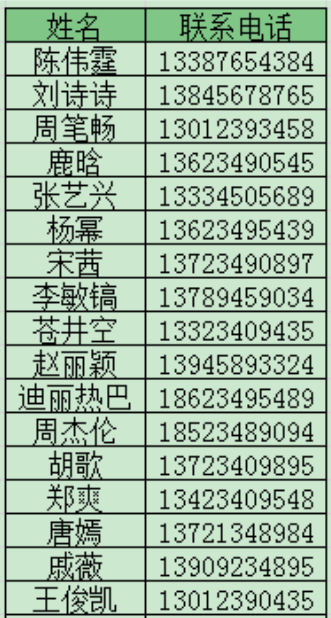
# 3.1、二维数组
1、代码案例 ——ArrayTest2.java
/* | |
* 二维数组的使用 | |
* | |
* 1. 理解 | |
* 对于二维数组的理解，我们可以看成是一维数组 array1 又作为另一个一维数组 array2 的元素而存在。 | |
* 其实，从数组底层的运行机制来看，其实没有多维数组。 | |
* | |
* 2. 二维数组的使用： | |
* ① 二维数组的初始化 | |
* ② 如何调用数组的指定位置的元素 | |
* ③ 如何获取数组的长度 | |
* ④ 如何遍历数组 | |
* ⑤ 数组元素的默认初始化值：见 ArrayTest3.java | |
* ⑥ 数组的内存解析：见 ArrayTest3.java | |
* | |
*/ | |
public class ArrayTest2 { | |
public static void main(String[] args) { | |
//1. 二维数组的声明和初始化 | |
int[] arr = new int[]{ 1,2,3}; | |
// 静态初始化 | |
int[][] arr1 = new int[][]{ { 1,2,3},{ 4,5,6},{ 7,8,9}}; | |
// 动态初始化 1 | |
String[][] arr2 = new String[3][2]; | |
// 动态初始化 2 | |
String[][] arr3 = new String[3][]; | |
// 错误的情况 | |
// String[][] arr4 = new String[][]; | |
// String[][] arr5 = new String[][4]; | |
// String[][] arr6 = new String[4][3]{ {1,2,3},{4,5,6},{7,8,9}}; | |
// 正确的情况： | |
int arr4[][] = new int[][]{ { 1,2,3},{ 4,5,12,6},{ 7,8,9}}; | |
int[] arr5[] = new int[][]{ { 1,2,3},{ 4,5,6},{ 7,8,9}}; | |
int[][] arr6 = { { 1,2,3},{ 4,5,6},{ 7,8,9}}; | |
//2. 如何调用数组的指定位置的元素 | |
System.out.println(arr1[0][1]); //2 | |
System.out.println(arr2[1][1]); //null | |
arr3[1] = new String[4]; // 定义 arr3 的 [1] 为长度为 4 的字符数组 | |
System.out.println(arr3[1][0]); // 没有上句，会报错 | |
//3. 获取数组的长度 | |
System.out.println(arr4.length); //3 | |
System.out.println(arr4[0].length); //3 | |
System.out.println(arr4[1].length); //4 | |
//4. 如何遍历二维数组 | |
for(int i = 0;i < arr4.length;i++){ | |
for(int j = 0;j < arr4[i].length;j++){ | |
System.out.print(arr4[i][j] + " "); | |
} | |
System.out.println(); | |
} | |
} | |
} |
2、代码案例 ——ArrayTest3.java
/* | |
* 二维数组的使用： | |
* 规定：二维数组分为外层数组的元素，内层数组的元素 | |
* int [][] arr = new int [4][3]; | |
* 外层元素:arr [0],arr [1] 等 | |
* 内层元素:arr [0][0],arr [1][2] 等 | |
* | |
* ⑤ 数组元素的默认初始化值 | |
* 针对于初始化方式一：比如：int [][] arr = new int [4][3]; | |
* 外层元素的初始化值为：地址值 | |
* 内层元素的初始化值为：与一维数组初始化情况相同 | |
* | |
* 针对于初始化方式而：比如：int [][] arr = new int [4][]; | |
* 外层元素的初始化值为：null | |
* 内层元素的初始化值为：不能调用，否则报错。 | |
* | |
* ⑥ 数组的内存解析 | |
*/ | |
public class ArrayTest3 { | |
public static void main(String[] args) { | |
int[][] arr = new int[4][3]; | |
System.out.println(arr[0]); //[I@15db9742 | |
System.out.println(arr[0][0]); //0 | |
// System.out.println(arr); //ArrayTest3.java | |
System.out.println("***********************"); | |
float[][] arr1 = new float[4][3]; | |
System.out.println(arr1[0]); // 地址值 | |
System.out.println(arr1[0][0]); //0.0 | |
System.out.println("***********************"); | |
String[][] arr2 = new String[4][2]; | |
System.out.println(arr2[1]); // 地址值 | |
System.out.println(arr2[1][1]); //null | |
System.out.println("*********************"); | |
double[][] arr3 = new double[4][]; | |
System.out.println(arr3[1]); //null | |
// System.out.println (arr3 [1][0]); // 报错 | |
} | |
} |
# 3.2、二维数组的内存解析
1、案例 1
int[][] arr1 = new int[4][]; | |
arr1[1] = new int[]{ 1,2,3}; | |
arr1[2] = new int[4]; | |
arr1[2][1] = 30; |
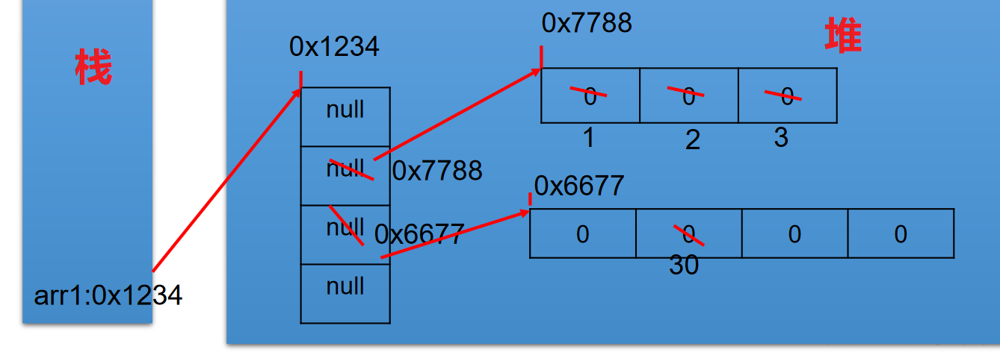
2、案例 2
int[][] arr4= newint[3][]; | |
System.out.println(arr4[0]);//null | |
System.out.println(arr4[0][0]);// 报错 | |
arr4[0] = new int[3]; | |
arr4[0][1] = 5; | |
arr4[1] = new int[]{ 1,2}; |
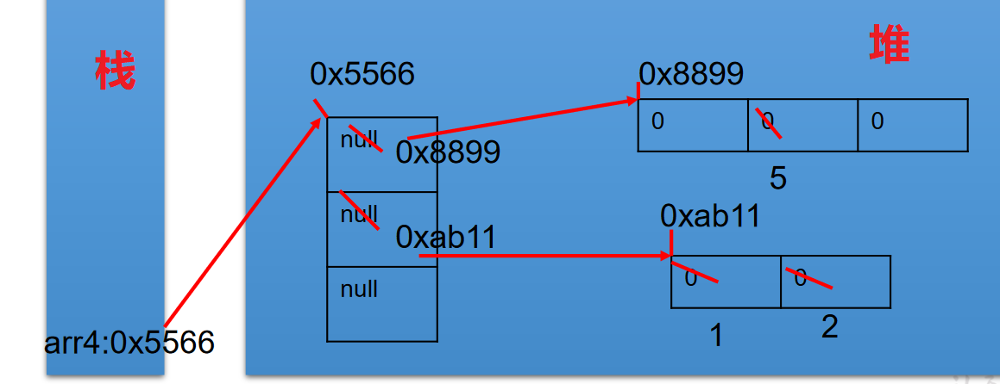
3、案例 3
int[][] arr = new int[3][]; | |
arr[1] = new int[]{ 1,2,3}; | |
arr[2] = new int[3]; | |
System.out.println(arr[0]);//null | |
System.out.println(arr[0][0]);// 报异常 |
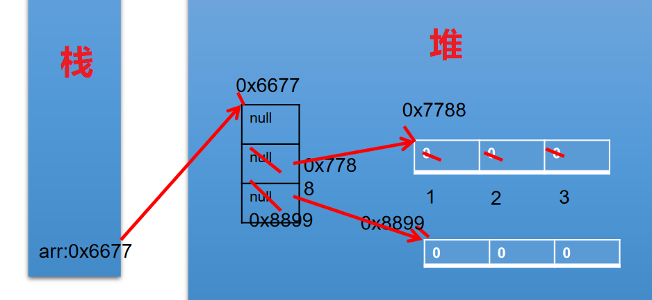
4、案例 4
int[][] arr1= newint[4][]; | |
arr1[0] = new int[3]; | |
arr1[1] = new int[]{ 1,2,3}; | |
arr1[0][2] = 5; | |
arr1 = new int[2][]; |
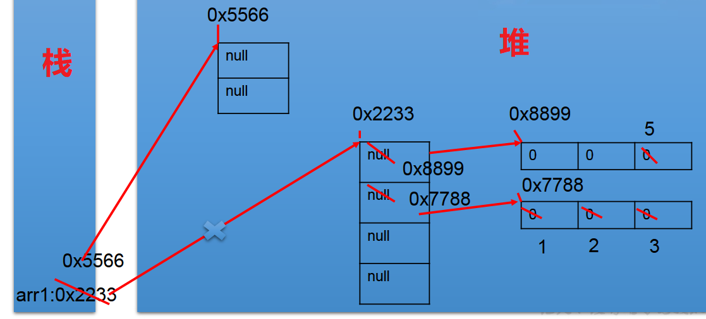
# 3.3、练习
1、练习 1
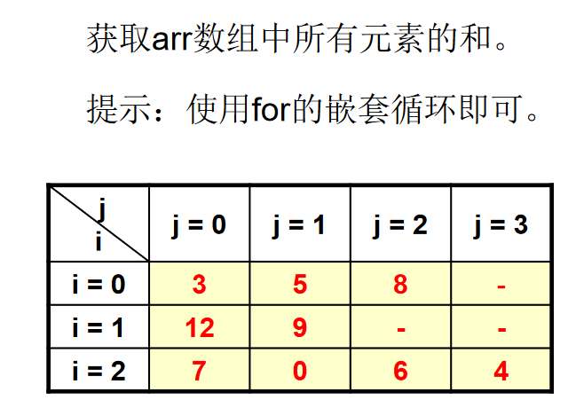
public class ArrayEver1 { | |
public static void main(String[] args) { | |
int[][] arr = new int[][]{ { 3,5,8},{ 12,9},{ 7,0,6,4}}; | |
int sum = 0; // 记录总和 | |
for(int i = 0;i < arr.length;i++){ | |
for(int j = 0;j < arr[i].length;j++){ | |
sum += arr[i][j]; | |
} | |
} | |
System.out.println(sum); | |
} | |
} |
2、练习 2
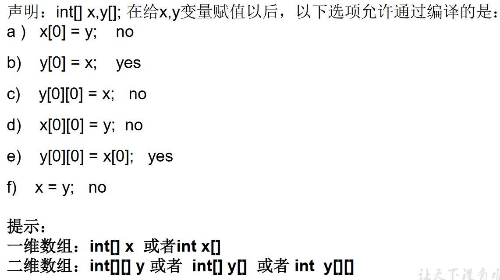
3、练习 3
使用二维数组打印一个 10 行杨辉三角。
/* | |
* 【提示】 | |
* 1. 第一行有 1 个元素，第 n 行有 n 个元素 | |
* 2. 每一行的第一个元素和最后一个元素都是 1 | |
* 3. 从第三行开始，对于非第一个元素和最后一个元素的元素。 | |
* 即：yanghui [i][j] = yanghui [i-1][j-1] + yanghui [i-1][j]; | |
*/ | |
public class ArrayEver2 { | |
public static void main(String[] args) { | |
//1. 声明并初始化二维数组 | |
int[][] arr = new int[10][]; | |
//2. 给数组的元素赋值，遍历二维数组 | |
for(int i = 0;i < arr.length;i++){ | |
arr[i] = new int[i+1]; | |
//2.1 给首末元素赋值 | |
arr[i][0]=arr[i][i]=1; | |
//2.2 给每行的非首末元素赋值 | |
// if(i > 1){ | |
for(int j = 1;j < arr[i].length-1;j++){ | |
arr[i][j] = arr[i-1][j-1] + arr[i-1][j]; | |
} | |
// } | |
} | |
// 3. 遍历数组 | |
for(int i = 0;i < arr.length;i++){ | |
for(int j = 0;j <arr[i].length;j++){ | |
System.out.print(arr[i][j] + " "); | |
} | |
System.out.println(); | |
} | |
} | |
} |
# 3.4、面试题目
1、创建一个长度为 6 的 int 型数组，要求取值为 1-30，同时元素值各不相同
// 此题只做了解，初学不必精通。 | |
public class ArrayEver3 { | |
public static void main(String[] args) { | |
// 方式一： | |
// int[] arr = new int[6]; | |
// for (int i = 0; i < arr.length; i++) {// [0,1) [0,30) [1,31) | |
// arr[i] = (int) (Math.random() * 30) + 1; | |
// | |
// boolean flag = false; | |
// while (true) { | |
// for (int j = 0; j < i; j++) { | |
// if (arr[i] == arr[j]) { | |
// flag = true; | |
// break; | |
// } | |
// } | |
// if (flag) { | |
// arr[i] = (int) (Math.random() * 30) + 1; | |
// flag = false; | |
// continue; | |
// } | |
// break; | |
// } | |
// } | |
// | |
// for (int i = 0; i < arr.length; i++) { | |
// System.out.println(arr[i]); | |
// } | |
// 方式二： | |
int[] arr2 = new int[6]; | |
for (int i = 0; i < arr2.length; i++) { // [0,1) [0,30) [1,31) | |
arr2[i] = (int) (Math.random() * 30) + 1; | |
for (int j = 0; j < i; j++) { | |
if (arr2[i] == arr2[j]) { | |
i--; | |
break; | |
} | |
} | |
} | |
for (int i = 0; i < arr2.length; i++) { | |
System.out.println(arr2[i]); | |
} | |
} | |
} |
# 04、 数组中涉及到的常见算法
- 数组元素的赋值 (杨辉三角、回形数等)
- 求数值型数组中元素的最大值、最小值、平均数、总和等
- 数组的复制、反转、查找 (线性查找、二分法查找)
- 数组元素的排序算法
# 4.1、数组元素的赋值
import java.util.Scanner; | |
/* | |
* 此题了解！！！ | |
* | |
* 回形数格式方阵的实现 | |
* 从键盘输入一个整数（1~20） | |
* 则以该数字为矩阵的大小，把 1,2,3…n*n 的数字按照顺时针螺旋的形式填入其中。例如： 输入数字 2，则程序输出： 1 2 | |
* 4 3 | |
* 输入数字 3，则程序输出：1 2 3 | |
* 8 9 4 | |
* 7 6 5 | |
* 输入数字 4， 则程序输出： | |
* 1 2 3 4 | |
* 12 13 14 5 | |
* 11 16 15 6 | |
* 10 9 8 7 | |
*/ | |
public class ArrayTest { | |
public static void main(String[] args) { | |
Scanner scanner = new Scanner(System.in); | |
System.out.println("输入一个数字:"); | |
int len = scanner.nextInt(); | |
int[][] arr = new int[len][len]; | |
int s = len * len; | |
/* | |
* k = 1: 向右 k = 2: 向下 k = 3: 向左 k = 4: 向上 | |
*/ | |
int k = 1; | |
int i = 0, j = 0; | |
for (int m = 1; m <= s; m++) { | |
if (k == 1) { | |
if (j < len && arr[i][j] == 0) { | |
arr[i][j++] = m; | |
} else { | |
k = 2; | |
i++; | |
j--; | |
m--; | |
} | |
} else if (k == 2) { | |
if (i < len && arr[i][j] == 0) { | |
arr[i++][j] = m; | |
} else { | |
k = 3; | |
i--; | |
j--; | |
m--; | |
} | |
} else if (k == 3) { | |
if (j >= 0 && arr[i][j] == 0) { | |
arr[i][j--] = m; | |
} else { | |
k = 4; | |
i--; | |
j++; | |
m--; | |
} | |
} else if (k == 4) { | |
if (i >= 0 && arr[i][j] == 0) { | |
arr[i--][j] = m; | |
} else { | |
k = 1; | |
i++; | |
j++; | |
m--; | |
} | |
} | |
} | |
// 遍历 | |
for (int m = 0; m < arr.length; m++) { | |
for (int n = 0; n < arr[m].length; n++) { | |
System.out.print(arr[m][n] + "\t"); | |
} | |
System.out.println(); | |
} | |
} | |
} |
# 4.2、数组元素的基本操作
/* | |
* 算法的考察：求数值型数组中元素的最大值、最小值、平均数、总和等 | |
* | |
* 定义一个 int 型的一维数组，包含 10 个元素，分别赋一些随机整数， | |
* 然后求出所有元素的最大值，最小值，和值，平均值，并输出出来。 | |
* 要求：所有随机数都是两位数。 | |
* | |
* [10,99] | |
* 公式：(int)(Math.random () * (99 - 10 + 1) + 10) | |
*/ | |
public class ArrayTest1 { | |
public static void main(String[] args) { | |
int[] arr = new int[10]; | |
// 数组赋值 | |
for(int i = 0;i <arr.length;i++){ | |
arr[i] = (int)(Math.random() * (99 - 10 + 1) + 10); | |
} | |
// 遍历 | |
for(int i =0;i < arr.length;i++){ | |
System.out.print(arr[i] + " "); | |
} | |
System.out.println(); | |
// 求数组元素的最大值 | |
int maxValue = arr[0]; | |
for(int i = 1;i <arr.length;i++){ | |
if(maxValue < arr[i]){ | |
maxValue = arr[i]; | |
} | |
} | |
System.out.println("最大值：" + maxValue); | |
// 求数组元素的最小值 | |
int minValue = arr[0]; | |
for(int i = 1;i <arr.length;i++){ | |
if(minValue > arr[i]){ | |
minValue = arr[i]; | |
} | |
} | |
System.out.println("最小值：" + minValue); | |
// 求数组元素的总和 | |
int sum = 0; | |
for(int i = 1;i <arr.length;i++){ | |
sum += arr[i]; | |
} | |
System.out.println("总和：" + sum); | |
// 求数组元素的平均数 | |
double avgVales = sum / arr.length; | |
System.out.println("平均数：" + avgVales); | |
} | |
} |
# 4.3、数组元素的基本操作 2
/* | |
* 使用简单数组 | |
* (1) 创建一个名为 ArrayTest 的类，在 main () 方法中声明 array1 和 array2 两个变量，他们是 int [] 类型的数组。 | |
* (2) 使用大括号 {}，把 array1 初始化为 8 个素数：2,3,5,7,11,13,17,19。 | |
* (3) 显示 array1 的内容。 | |
* (4) 赋值 array2 变量等于 array1，修改 array2 中的偶索引元素，使其等于索引值 (如 array [0]=0,array [2]=2)。打印出 array1。 | |
*/ | |
public class ArrayTest2 { | |
public static void main(String[] args) { | |
// 声明 array1 和 array2 两个 int [] 变量 | |
int[] array1,array2; | |
//array1 初始化 | |
array1 = new int[]{ 2,3,5,7,11,13,17,19}; | |
// 显示 array1 的内容 == 遍历。 | |
for(int i = 0;i < array1.length;i++){ | |
System.out.print(array1[i] + "\t"); | |
} | |
// 赋值 array2 变量等于 array1 | |
// 不能称作数组的复制。 | |
array2 = array1; | |
// 修改 array2 中的偶索引元素，使其等于索引值 (如 array [0]=0,array [2]=2)。 | |
for(int i = 0;i < array2.length;i++){ | |
if(i % 2 == 0){ | |
array2[i] = i; | |
} | |
} | |
System.out.println(); | |
// 打印出 array1。 | |
for(int i = 0;i < array1.length;i++){ | |
System.out.print(array1[i] + "\t"); | |
} | |
} | |
} |
1、思考：上述 array1 和 array2 是什么关系？
//array1 和 array2 地址值相同，都指向了堆空间的唯一的一个数组实体。 | |
int[] array1,array2; | |
array1 = new int[]{ 2,3,5,7,11,13,17,19}; | |
array2 = array1; | |
for(int i = 0;i < array2.length;i++){ | |
if(i % 2 == 0){ | |
array2[i] = i; | |
} | |
} |
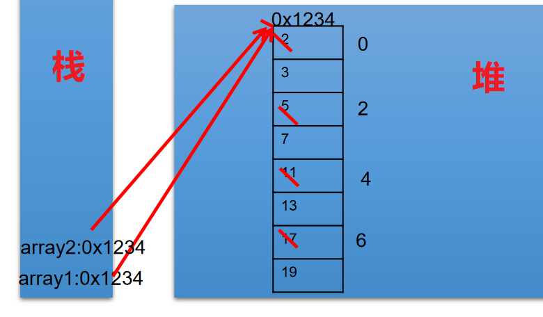
2、拓展：修改题目，实现 array2 对 array1 数组的复制
int[] array1,array2; | |
array1 = new int[]{ 2,3,5,7,11,13,17,19}; | |
// 数组的复制 | |
array2 = new int[array1.length]; | |
for(int i = 0;i < array2.length;i++){ | |
array2[i] = array1[i]; | |
} |
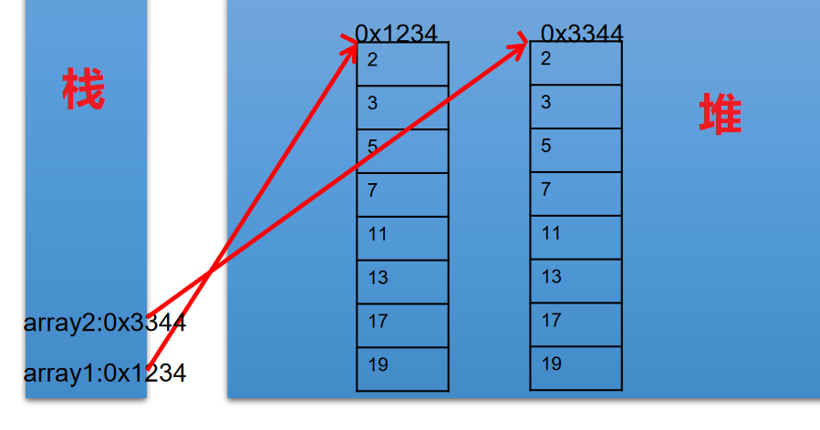
# 4.4、数组的复制、反转、查找
1、复制、反转
/* | |
* 算法的考察：数组的复制、反转、查找 (线性查找、二分法查找) | |
*/ | |
public class ArrayTest3 { | |
public static void main(String[] args) { | |
String[] arr = new String[]{ "SS","QQ","YY","XX","TT","KK","EE","GG"}; | |
// 数组的复制 | |
String[] arr1 = new String[arr.length]; | |
for(int i = 0;i < arr1.length;i++){ | |
arr1[i] = arr[i]; | |
} | |
// 数组的反转 | |
// 方法一： | |
// for(int i = 0;i < arr.length / 2;i++){ | |
// String temp = arr[i]; | |
// arr[i] = arr[arr.length - i - 1]; | |
// arr[arr.length - i - 1] = temp; | |
// } | |
// 方法二： | |
for(int i = 0,j = arr.length - 1;i < j;i++,j--){ | |
String temp = arr[i]; | |
arr[i] = arr[j]; | |
arr[j] = temp; | |
} | |
// 遍历 | |
for(int i = 0;i < arr.length;i++){ | |
System.out.print(arr[i] + "\t"); | |
} | |
System.out.println(); | |
// 查找（或搜索） | |
// 线性查找 | |
String dest = "BB"; // 要查找的元素 | |
dest = "CC"; | |
boolean isFlag = true; | |
for(int i = 0;i < arr.length;i++){ | |
if(dest.equals(arr[i])){ | |
System.out.println("找到了指定元素，位置为：" + i); | |
isFlag = false; | |
break; | |
} | |
} | |
if(isFlag){ | |
System.out.println("很遗憾，没找到！"); | |
} | |
// 二分法查找： | |
} | |
} |
2、二分法查找算法
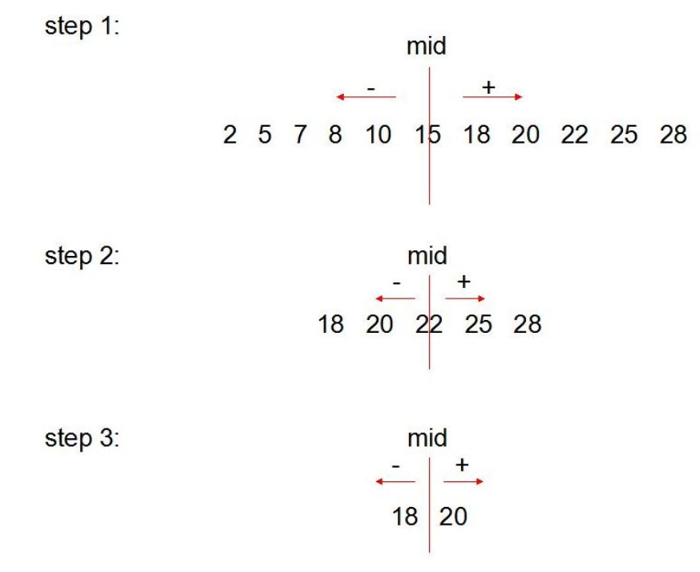
public class ArrayTest3 { | |
public static void main(String[] args) { | |
// 二分法查找： | |
// 前提：所要查找的数组必须有序 | |
int[] arr2 = new int[]{ -98,-34,2,34,54,66,79,105,210,333}; | |
int dest1 = -34; | |
int head = 0; // 初始的首索引 | |
int end = arr2.length - 1; // 初始的末索引 | |
boolean isFlag1 = true; | |
while(head <= end){ | |
int middle = (head + end)/2; | |
if(dest1 == arr2[middle]){ | |
System.out.println("找到了指定元素，位置为：" + middle); | |
isFlag1 = false; | |
break; | |
}else if(arr2[middle] > dest1){ | |
end = middle - 1; | |
}else{ //arr2[middle] < dest1 | |
head = middle + 1; | |
} | |
} | |
if(isFlag1){ | |
System.out.println("很遗憾，没找到！"); | |
} | |
} | |
} |
# 4.5、数组元素的排序算法
排序：假设含有 n 个记录的序列为 {R1，R2，…,Rn}, 其相应的关键字序列为 {K1，K2，…,Kn}。将这些记录重新排序为 {Ri1,Ri2,…,Rin}, 使得相应的关键字值满足条 Ki1<=Ki2<=…<=Kin, 这样的一种操作称为排序。
- 通常来说，排序的目的是快速查找。
衡量排序算法的优劣：
- 时间复杂度 ：分析关键字的比较次数和记录的移动次数
- 空间复杂度：分析排序算法中需要多少辅助内存
- 稳定性 ：若两个记录 A 和 B 的关键字值相等，但排序后 A、B 的先后次序保持不变，则称这种排序算法是稳定的。
排序算法分类：内部排序和 外部排序。
- 内部排序：整个排序过程不需要借助于外部存储器（如磁盘等），所有排序操作都在内存中完成。
- 外部排序：参与排序的数据非常多，数据量非常大，计算机无法把整个排序过程放在内存中完成，必须借助于外部存储器（如磁盘）。外部排序最常见的是多路归并排序。可以认为外部排序是由多次内部排序组成。
# 4.6、十大内部排序算法
- 选择排序
- 直接选择排序、堆排序
- 交换排序
- 冒泡排序、快速排序
- 插入排序
- 直接插入排序、折半插入排序、Shell 排序
- 归并排序
- 桶式排序
- 基数排序
- 详细操作，见《附录》 附录：尚硅谷_宋红康_排序算法.pdf
# 4.7、算法的 5 大特征
| 输入（Input） | 有 0 个或多个输入数据，这些输入必须有清楚的描述和定义 |
|---|---|
| 输出（Output） | 至少有 1 个或多个输出结果，不可以没有输出结果 |
| 有穷性（有限性，Finiteness） | 算法在有限的步骤之后会自动结束而不会无限循环，并且每一个步骤可以在可接受的时间内完成 |
| 确定性（明确性，Definiteness） | 算法中的每一步都有确定的含义，不会出现二义性 |
| 可行性（有效性，Effectiveness） | 算法的每一步都是清楚且可行的，能让用户用纸笔计算而求出答案 |
说明：满足确定性的算法也称为：确定性算法。现在人们也关注更广泛的概念，例如考虑各种非确定性的算法，如并行算法、概率算法等。另外，人们也关注并不要求终止的计算描述，这种描述有时被称为过程（procedure）。
# 4.8、冒泡排序 (重要)
冒泡排序的基本思想：通过对待排序序列从前向后，依次比较相邻元素的排序码，若发现逆序则交换，使排序码较大的元素逐渐从前部移向后部。
因为排序的过程中，各元素不断接近自己的位置，如果一趟比较下来没有进行过交换，就说明序列有序， 因此要在排序过程中设置一个标志 swap 判断元素是否进行过交换。从而减少不必要的比较。

/* | |
* 数组的冒泡排序的实现 | |
* | |
*/ | |
public class BubbleSortTest { | |
public static void main(String[] args) { | |
int[] arr = new int[]{ 43,32,76,92,-65,85,71,-42}; | |
// 冒泡排序 | |
for(int i = 0;i < arr.length - 1;i++){ | |
for(int j = 0;j < arr.length - 1 - i;j++){ | |
if(arr[j] > arr[j+1]){ | |
int temp = arr[j]; | |
arr[j] = arr[j+1]; | |
arr[j+1] = temp; | |
} | |
} | |
} | |
for(int i = 0;i < arr.length;i++){ | |
System.out.print(arr[i] + "\t"); | |
} | |
} | |
} |
# 4.9、快速排序 (初学 Java，仅作了解)
快速排序（Quick Sort）由图灵奖获得者 Tony Hoare 发明，被列为 20 世纪十大算法之一，是迄今为止所有内排序算法中速度最快的一种。冒泡排序的升级版，交换排序的一种。快速排序的时间复杂度为 O (nlog (n))。
排序思想：
- 从数列中挑出一个元素，称为 "基准"（pivot），
- 重新排序数列，所有元素比基准值小的摆放在基准前面，所有元素比基准值大的摆在基准的后面（相同的数可以到任一边）。在这个分区结束之后，该基准就处于数列的中间位置。这个称为分区（partition）操作。
- 递归地（recursive）把小于基准值元素的子数列和大于基准值元素的子数列排序。
- 递归的最底部情形，是数列的大小是零或一，也就是永远都已经被排序好了。虽然一直递归下去，但是这个算法总会结束，因为在每次的迭代（iteration）中，它至少会把一个元素摆到它最后的位置去。

/** | |
* 快速排序 | |
* 通过一趟排序将待排序记录分割成独立的两部分，其中一部分记录的关键字均比另一部分关键字小， | |
* 则分别对这两部分继续进行排序，直到整个序列有序。 | |
* | |
*/ | |
public class QuickSort { | |
private static void swap(int[] data, int i, int j) { | |
int temp = data[i]; | |
data[i] = data[j]; | |
data[j] = temp; | |
} | |
private static void subSort(int[] data, int start, int end) { | |
if (start < end) { | |
int base = data[start]; | |
int low = start; | |
int high = end + 1; | |
while (true) { | |
while (low < end && data[++low] - base <= 0) | |
; | |
while (high > start && data[--high] - base >= 0) | |
; | |
if (low < high) { | |
swap(data, low, high); | |
} else { | |
break; | |
} | |
} | |
swap(data, start, high); | |
subSort(data, start, high - 1);// 递归调用 | |
subSort(data, high + 1, end); | |
} | |
} | |
public static void quickSort(int[] data){ | |
subSort(data,0,data.length-1); | |
} | |
public static void main(String[] args) { | |
int[] data = { 9, -16, 30, 23, -30, -49, 25, 21, 30 }; | |
System.out.println("排序之前：\n" + java.util.Arrays.toString(data)); | |
quickSort(data); | |
System.out.println("排序之后：\n" + java.util.Arrays.toString(data)); | |
} | |
} |
# 4.10 排序算法性能对比
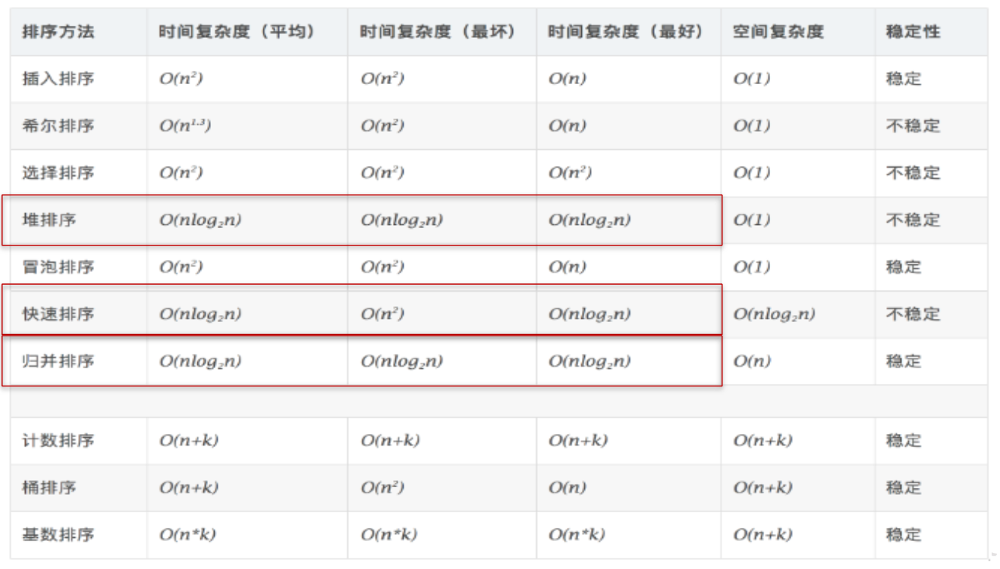
各种内部排序方法性能比较
- 从平均时间而言：快速排序最佳。但在最坏情况下时间性能不如堆排序和归并排序。
- 从算法简单性看：由于直接选择排序、直接插入排序和冒泡排序的算法比较简单，将其认为是简单算法。对于 Shell 排序、堆排序、快速排序和归并排序算法，其算法比较复杂，认为是复杂排序。
- 从稳定性看：直接插入排序、冒泡排序和归并排序是稳定的；而直接选择排序、快速排序、Shell 排序和堆排序是不稳定排序
- 从待排序的记录数 n 的大小看，n 较小时，宜采用简单排序；而 n 较大时宜采用改进排序。
排序算法的选择
(1) 若 n 较小 (如 n≤50)，可采用直接插入或直接选择排序。当记录规模较小时，直接插入排序较好；否则因为直接选择移动的记录数少于直接插入，应选直接选择排序为宜。 (2) 若文件初始状态基本有序 (指正序)，则应选用直接插入、冒泡或随机的快速排序为宜； (3) 若 n 较大，则应采用时间复杂度为 O (nlgn) 的排序方法：快速排序、堆排序或归并排序。
# 05、 Arrays 工具类的使用
java.util.Arrays 类即为操作数组的工具类，包含了用来操作数组（比如排序和搜索）的各种方法。
| 1 | boolean equals(int[] a,int[] b) | 判断两个数组是否相等。 |
|---|---|---|
| 2 | String toString(int[] a) | 输出数组信息。 |
| 3 | void fill(int[] a,int val) | 将指定值填充到数组之中。 |
| 4 | void sort(int[] a) | 对数组进行排序。 |
| 5 | int binarySearch(int[] a,int key) | 对排序后的数组进行二分法检索指定的值。 |
import java.util.Arrays; | |
/* | |
* java.util.Arrays: 作数组的工具类，包含了用来操作数组（比如排序和搜索）的各种方法。 | |
*/ | |
public class ArrayTest4 { | |
public static void main(String[] args) { | |
//1.boolean equals (int [] a,int [] b) 判断两个数组是否相等。 | |
int[] arr1 = new int[]{ 1,2,3,4}; | |
int[] arr2 = new int[]{ 1,2,9,3}; | |
boolean isEquals = Arrays.equals(arr1, arr2); | |
System.out.println(isEquals); | |
//2.String toString (int [] a) 输出数组信息。 | |
System.out.println(Arrays.toString(arr1)); | |
//3.void fill (int [] a,int val) 将指定值填充到数组之中。 | |
Arrays.fill(arr1, 10); | |
System.out.println(Arrays.toString(arr1)); | |
//4.void sort (int [] a) 对数组进行排序。 | |
Arrays.sort(arr2); | |
System.out.println(Arrays.toString(arr2)); | |
//5.int binarySearch (int [] a,int key) 对排序后的数组进行二分法检索指定的值。 | |
int[] arr3 = new int[]{ 43,32,76,92,-65,85,71,-42}; | |
int index = Arrays.binarySearch(arr3, 210); | |
if(index >= 0){ | |
System.out.println(index); | |
}else{ | |
System.err.println("未找到。"); | |
} | |
} | |
} |
# 06、 数组使用中的常见异常
/* | |
* 数组中的常见异常： | |
* 1. 数组角标越界的异常：ArrayIndexOutOfBoundsException | |
* | |
* 2. 空指针异常：NullPointerException | |
* | |
*/ | |
public class ArrayExceptionTest { | |
public static void main(String[] args) { | |
//1. 数组角标越界的异常：ArrayIndexOutOfBoundsException | |
int[] arr = new int[]{ 1,2,3,4,5,6}; | |
// 错误 1： | |
// for(int i = 0;i <= arr.length;i++){ | |
// System.out.println(arr[i]); | |
// } | |
// 错误 2： | |
// System.out.println(arr[-2]); | |
// 错误 3 | |
// System.out.println("hello"); | |
//2. 空指针异常：NullPointerException | |
// 情况一: | |
// int[] arr2= new int[]{1,2,3}; | |
// arr2 = null; | |
// System.out.println(arr2[0]); | |
// 情况二: | |
// int[][] arr2 = new int[4][]; | |
// System.out.println(arr2[0][0]); | |
// 情况三: | |
// String[] arr3 = new String[]{"AA","QQ","YY","XX","TT","KK"}; | |
// arr3[0] = null; | |
// System.out.println(arr3[0].toString()); | |
} | |
} |